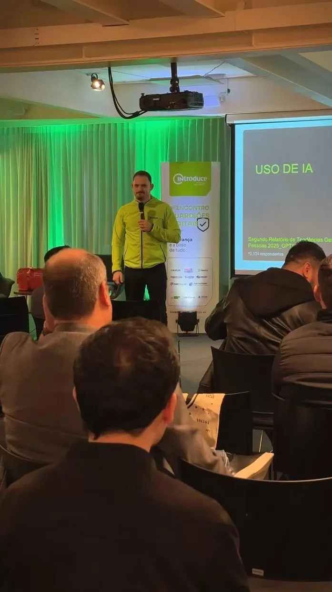

Artigos, cases, eventos e vídeos para quem leva a segurança da operação ao conselho.

O conselho decide risco, continuidade e crescimento. Veja como levar a segurança para essa conversa.
Ler artigoUma ferramenta visual para estruturar riscos, controles, compliance e incidentes em uma página.
Baixar grátis →Pilares, ameaças, perímetro, mitigação e plano de segurança em cinco capítulos práticos.
Baixar grátis →
Firewall, endpoint, wireless, SOC MDR 24×7×365 e uma jornada de governança que começou na resposta a um incidente, em 2016.
Ler artigo →
No Instituto Caldeira, em Porto Alegre, o tema é “Liderando transformações que só humanos podem fazer”.
Ler artigo →
SOC com Sophos MDR, monitoramento 24×7 e a segurança sustentando as exigências de montadoras e parceiros.
Ler artigo →
No 6º Encontro, o Board Room Challenge colocou mais de 85 líderes no papel de executivos diante de um conselho.
Ler artigo →Da TI reativa à segurança como pilar da governança hospitalar, em uma parceria de mais de dez anos.
Ler artigo →Feriados, eleições e mais ataques: como usar a IA como âncora de resiliência, com governança e dados seguros.
Ler artigo →O maior risco não é o ataque, é a incapacidade de responder a ele. O papel de um Sistema de Gestão de Continuidade de Negócios.
Ler artigo →Do on-premises à nuvem: 25% de economia na fatura de cloud e segurança em todas as camadas para sustentar o crescimento.
Ler artigo →Pentest e programa de conscientização para proteger canais digitais, cumprir compliance e engajar todos os colaboradores.
Ler artigo →O 4º Encontro Guardiões Digitais reuniu líderes, parceiros e membros da comunidade no Nau Live Spaces.
Ler artigo →Pentest, assessment ISO/IEC 27001:2022, PDTI, PETI e plano de Disaster Recovery no maior terminal multipropósito do Brasil.
Ler artigo →Firewalls Sophos com SD-WAN e Escudo Digital com monitoramento 24×7: menos chamados reativos e contrato renovado por mais três anos.
Ler artigo →Por que o polo industrial catarinense virou alvo e as cinco ações essenciais para se proteger.
Ler artigo →
EDR, XDR, NDR e MDR: o que cada camada faz e como elas se integram para proteger a operação.
Ler artigo →
O 3º Encontro Guardiões Digitais voltou à ACATE, em Florianópolis, com palestras, talk cases e o CyberSim.
Ler artigo →GRC visual e colaborativo: os nove pilares da plataforma de governança de segurança do Grupo Introduce.
Ler artigo →
Os sete passos para construir uma cultura de segurança, apresentados por Brayan Poloni no SecOps Summit 2025.
Ler artigo →O novo papel do CISO e as cinco etapas de um Planejamento Estratégico de Segurança da Informação.
Ler artigo →A diferença entre pentest e varredura de vulnerabilidades, os tipos, formatos e metodologias de um teste confiável.
Ler artigo →
SOC com MDR Sophos para monitoramento e resposta 24×7 em um dos maiores grupos de concessionárias do Sul.
Baguete ↗Episódio do podcast Guardiões Digitais com o Café com Bytes.
YouTube ↗Nenhum conteúdo nesta categoria por enquanto.
Tendências, dados e histórias da linha de frente, escritos para quem decide.
Faça parte da comunidade com mais de 1.500 especialistas, linha de frente na cibersegurança brasileira.
Conhecer os Guardiões Digitais